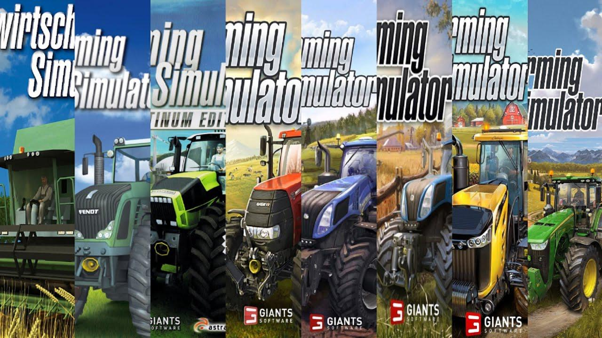

"Física pra que?" Fabinho (@crazygamerfabinho)
Descrição
Carreira
Na carreira, o jogador é um agricultor. Ele tem que colher suas plantações e vender para aumentar a sua fazenda, comprar campos. O jogo é livre para fazer o que quiser. O jogador cresce e escolhe o que quer fazer, e então, pode usar seu dinheiro em campos adicionais e comprar máquinas, tratores e o caminhão. Os animais podem ser comprados durante o jogo, e então, os jogadores tem que cuidar deles. Seja o melhor fazendeiro do jogo.Missões
Há missões (tarefas) no jogo, que são gerados temporariamente. O jogador realiza missões num período de tempo, como entregar plantações com melhor preço, encontrar objetos perdidos e cortar grama. Ao concluir as missões, o jogador ganha moedas e bônus.Lançamentos
A Giants Software lança os jogos de Farming Simulator todos os anos. Adicionam novas máquinas, cenários, tratores, gameplay e melhoram a jogabilidade.
- Anos PARES: Os jogos lançados do Farming Simulator são em números ÍMPARES (exceto em 2008 e 2021), para versões de console e PC.
- Anos ÍMPARES: Os jogos lançados do Farming Simulator são em números PARES (exceto em 2009 e 2021), para versões móveis.
De 2020 em diante, houve uma inversão da regra numérica de lançamento, por conta do Covid-19 e do lançamento de consoles modernos.
Itens do jogo
Nos jogos de Farming Simulator tem:
- Ferramentas de agricultor, que são os cultivadores (gradeadeiras) e semeadores (plantadeiras), para usar nos campos;
- Colheitadeiras, para colher plantações. Algumas colheitadeiras têm mais de uma cabeça de corte, que são comprados separadamente;
- Campos, para cultivar, semear plantações e cortar grama;
- TratoresTratores, que têm capacidade para engatar cultivadores, reboques e semeadores;
- Ferramentas para fenos, com a enfardadeira e empilhador de fenos. O feno de trigo é feito a partir da plantação de trigo em campos de terra, em que a colheitadeira deixa filas de palha, e alimenta os animais. Nos campos de grama, precisa cortá-la e virá-la, com a ferramenta necessária, para depois fazer fenos de grama, e também alimenta os animais;
- Reboques, que são as carretas caçamba, trailer de animais, prancha e tanque de leite;
- Pontos de venda, para vender as plantações. A Biogás, além de vender as plantações, produz fertilizante para as plantações, e silagem, para alimentar os animais;
- Caminhão, que tem capacidade para engatar reboques maiores e andar com velocidade maior do que tratores;
- Animais, que produz estrume a partir do trigo, para usar como fertilizante nas plantações, e lã e leite a partir da grama, para vender nos pontos de venda específicos;
- Silvicultura, com o cortador de árvores e carregador de troncos, e estes são vendidos em pontos de venda específicos. Também tem o cortador de tocos de árvore, para depois crescer uma nova árvore no mesmo lugar;
- Fábricas, onde o jogador pode, com os seus recursos que tiver, criar produtos mais caros e vendê-los.
Opções de jogo
Multiplayer
O Modo Multiplayer foi estreado pela Giants no Farming Simulator 14, o primeiro dispositivo móvel a ter essa opção. Daí em diante, nas versões de PC e consoles, os jogadores podem se conectar simultâneamente até o limite dado pelo jogo, podendo variar de acordo com a versão. Nas dispositivos móveis, Os jogadores só conseguem se conectar pela mesma rede Wi-fi ou Bluetooth em proximidade. Esse último caso é possível até o Farming Simulator 20, estando ausente o Modo Multiplayer no Farming Simulator 23.MODs
Os jogadores podem adicionar Mods nos jogos de Farming Simulator, como máquinas e tratores adicionais, mapas e comandos. e pode ser feito também por meio de DLCs que a Giants lança no ano seguinte do lançamento.Jogos
Abaixo tem a tabela de jogos lançados de Farming Simulator. As Referências são os sites dos lançamentos.
| Farming's | Lugares | Lançamento | Publicadora | Referências |
|---|---|---|---|---|
| Farming Simulator 2008 | PC | 28 de Março de 2008 | Astragon | [carece de fontes] |
| Farming Simulator 2009 | PC | 28 de Agosto de 2009 | Astragon | Site Metacritic |
| Farming Simulator 2011 | PC | 29 de Outubro de 2010 | Astragon | Site Metacritic |
| Farming Simulator 2012 | IOS, Android, Nintendo 3DS | 2 de Março de 2011 | Focus Home Interactive | [carece de fontes] |
| Farming Simulator 2013 | PC, MAC | 25 de Outubro de 2012 | Focus Home Interactive | Site Metacritic |
| Farming Simulator 2014 | IOS, Android, Windows Phone, Kindle Fire, PSVita, Nintendo 3DS | 18 de Novembro de 2013 | Focus Home Interactive | Site VG247.com |
| Farming Simulator 2015 | PC, PS3, PS4, Xbox 360, Xbox One | 30 de Outubro de 2014 | Focus Home Interactive | Site Metacritic |
| Farming Simulator 2016 | IOS, Android, Windows Phone, Kindle Fire, PSVita | 8 de Maio de 2015 | Focus Home Interactive | [carece de fontes] |
| Farming Simulator 2017 | PC, PS4, Xbox One | 25 de Outubro de 2016 | Focus Home Interactive | Site Oficial |
| Farming Simulator 2018 | IOS, Android, PSVita, Nintendo 3DS | 3 de Junho de 2017 | Focus Home Interactive | Site Oficial |
| Farming Simulator 2019 | PC, PS4, Xbox One | 20 de Novembro de 2018 | Focus Home Interactive | Site FS19 mods.com |
| Farming Simulator 2020 | IOS, Android, Nintendo Switch | 3 de Dezembro de 2019 | Focus Home Interactive | Site Oficial |
| Farming Simulator 2022 | PC, PS4, PS5, Xbox One, Xbox Series X/S, Stadia, MacOS | 22 de Novembro de 2021 | Giants Software | Site Oficial |
| Farming Simulator 2023 | IOS, Android, Nintendo Switch | 23 de Maio de 2023 | Giants Software | Site Oficial |
| Farming Simulator 2025 | PC, MAC, PS5, Xbox Series X/S | 12 de Novembro de 2024 | Giants Software | Site Oficial |
História
Em 2008, a Giants Software começou, junto com Astragon, a criar o Farming Simulator. No primeiro jogo, o jogador começa com o trator, colheitadeira, as ferramentas de agricultor e todos os campos do mapa, pois nesse jogo não comprava campos (foi assim até o Farming Simulator 2012). Tem plantações de Trigo, Canola e Milho, e as máquinas são do tipo Quadrados, sendo o Porto o único ponto de venda. Nesse jogo só tem a marca de máquinas Fendt. O segundo jogo, lançado em 2009, é uma atualização desse primeiro, e as máquinas já são do tipo Redondos. Depois, do Farming Simulator 2011 até 2016, os jogos não tem as máquinas da Fendt, e começaram a ter animais e novas marcas de máquinas e tratores, como Deutz-Fahr, Case IH, New Holland e Krone.
Em 2011, a Giants lançou o primeiro jogo para Android, o Farming Simulator 2012. Depois, começou a ter novas plantações, e do Farming Simulator 2013 até hoje, o jogador tem que comprar os campos. De 2012 até 2019, a Focus Home Interactive atuou como publicadora dos jogos, depois sendo a própria Giants a publicadora. A marca Fendt só apareceu novamente no Farming Simulator 2017. Nos últimos jogos, foi acrescentado a Silvicultura e novas plantações, como a Cana-de-açúcar, com o reboque de cana e as máquinas necessárias. No Farming Simulator 2019 conta com a marca de máquinas John Deere.
No período de pandemia de Covid-19, em que o alerta foi dado em Dezembro de 2019[13], acabou que a Giants não conseguiu lançar em 2020 o que deveria ser o Farming Simulator 2021 para PC e Consoles, e com prejuízo nos trabalhos, fez com que adiasse o jogo para lançar no final de 2021, com o nome Farming Simulator 2022. Também, o que gerou o atraso foi a chegada da nova geração de Consoles, como o PS5.[14].
Neste Farming Simulator 2022, foi adicionado novas plantações como Uvas e Olivas, e também novas máquinas, que até então não existiam no jogo, novos pontos de venda e formas de ganhar dinheiro[15]. Além disso, trouxe de inovação a neve, e com ela, as estações do ano, chamado de Ciclos Sazonais. E com o lançamento do Farming Simulator 2023 e posteriores, traz de volta a Silvicultura, ausente no Farming Simulator 2020, e além das plantações da versão PC já ditas, tem como novidade 2 mapas simultâneos, com ambiente na Europa e Estados Unidos.
